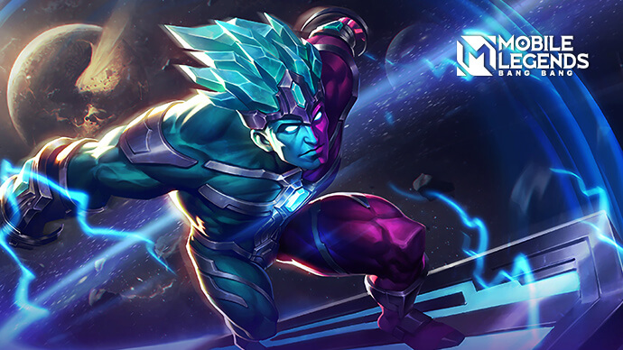

Горд — мощный маг. Играть этим героем невероятно сложно в самом начале, но как только вы овладеете всеми навыками, враги будут умолять о пощаде.
Горд всегда был живым доказательством совершенства в магической академии. Он родился с даром манипулировать мистическими силами, благодаря которым он освоил несколько сложных заклинаний в раннем возрасте. Но это явно обоюдоострый меч, так как Горд со временем становился все более и более высокомерным. Однажды он наткнулся на запрещенную книгу в академии, в которой записан метод выковывания чистого мистического существования из человеческого тела с помощью мистических сил.
Молодой волшебник уткнулся в книгу и начал свое исследование, не уважая мнение со стороны. Вначале это сработало успешно, чистая мистическая энергия начала перетекать в лозы Горда, поэтому он мог произносить еще более мощные заклинания. Все оказалось плохо, так как Горд был переполнен мистической энергией. Затем Горд попытался найти решение из древней магии. С падением двух разных энергий тело Горда было почти опустошено. Благодаря помощи главного волшебника Элварда, турбулентность в его теле наконец была под контролем. Этот инцидент нанес огромный ущерб Горду, оставив его тело наполовину красным и наполовину синим. Более безнадежно, что Горд никогда не станет существом, состоящим из чистой мистической энергии.
Элвард ободрил Горда, чтобы он наконец встал на ноги. затем Элвард пригласил Горда продолжить карьеру волшебника и пригласил его преподавать в академии. После тщательного рассмотрения Горд принял предложение. Он хочет найти ученика, который продолжит свое обучение, не сталкиваясь с той же ошибкой. С того дня Горд начал новую жизнь как самый строгий профессор в магической академии.
Плюсы
Недостатки